计组期末预习
重点大纲
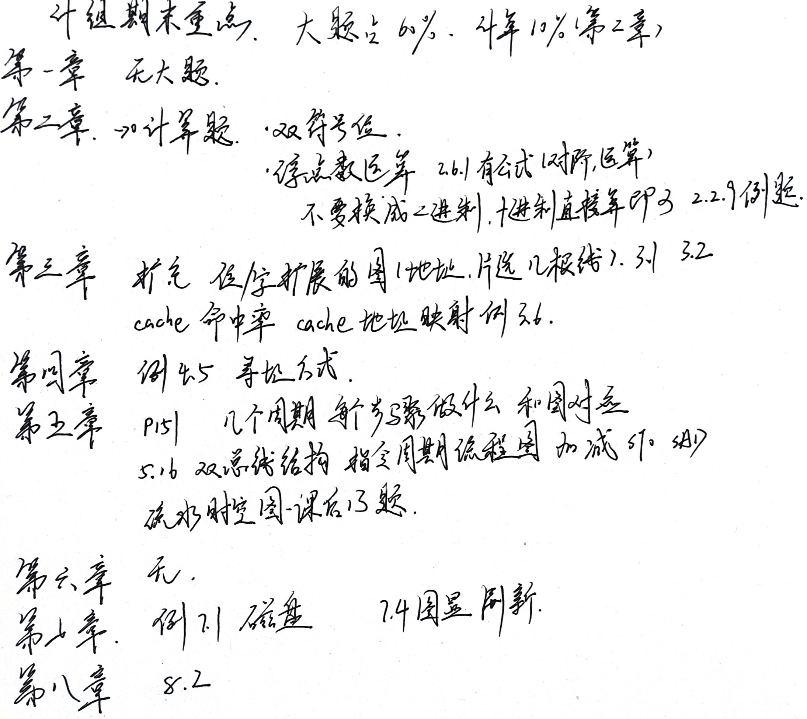
剩下的 20 分是选择，10分判断题
需要写的题占 70 分，故只用预习这部分即可
第二章 运算器
双符号位
用来判断溢出的
前置知识：正数符号位是0，负数符号位是1
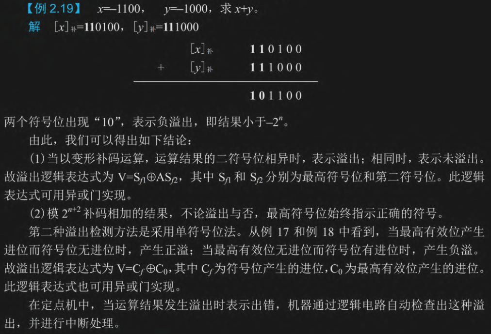
计算过程：先转补码，负数符号位是 11，然后直接相加，如果 10 则负溢出（下溢），01则正溢出（上溢）
浮点数运算
流程：先对阶，小阶向大阶看齐，然后直接相加或者减少，最后变为 1.xxx 的形式
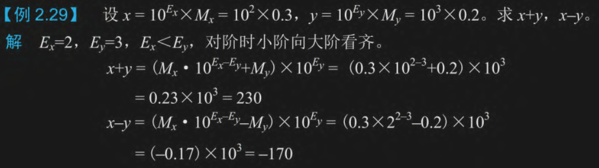
给的本身就是十进制，就不用换为二进制了
乘除法能算的就直接算，不能算的分数就不要了
第三章 存储器
字位扩展
笔记上记录的是 3.1 3.2，但是实际应该是对应 3.2.4，当时记录的应该是课后习题
位扩展：把低比特芯片（ 2 位或者 4 位）拓展到高比特位数（8 位甚至更多）。画在下面的数据总线
字扩展：加大容量。画在上面的地址总线
值得注意的是，位扩展也会加大总容量，不要计算重复了
别忘了读写线
下面是课后习题 3.1 和 3.2
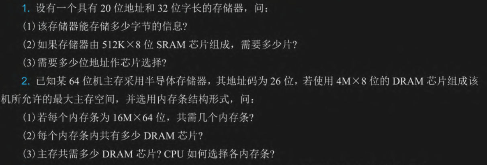
第一题
(1) 32 位所以每个地址存 4B 数据，20位地址所以总容量是 $2^{20}*4B=4MB$
(2) 8 位变 32 位，需要位扩展四倍，这里地址位是 $512K=2^{19}$，字扩展二倍即可。共计 8 片
(3) 字扩展需要片选，故 1:2 译码器即可，需要一根地址线
第二题
(1) 电脑是 64 位，内存条也是 64 位，所以不需要位扩展；$16M=2^{24}$，而地址码为 26 位，所以需要四个内存条
(2) 把 4M*8位 字位扩展为 16M*64位，需位扩展八倍，字扩展四倍，总共需要 32 个 DRAM 芯片
(3) 4*32=128 个 DRAM，四个内存条所以接入一个 2:4 译码器，地址线两条，剩下地位 24 条用于条内寻址
画图的时候别忘了 读写线（ CPU端为 $R/\overline{W}$ ，芯片端为 $\overline{WE}$ 和 $\overline{OE}$）
第二题画图好像还有二次扩展？哎哎我赌考试不考
cache 命中率
这个符号好难记哇，我不要记了
- $N_m$：命中次数
- $N_m$：未命中次数
- $t_c$：Cache 的存取周期（命中时花的时间，很短）
- $t_m$：主存的存取周期（未命中时花的时间，较长）
需要的公式：
- 命中率 $h = \frac{N_c}{N_c + N_m}$
- 平均访问时间 $t_a = h \cdot t_c + (1 - h) \cdot t_m$
- 访问效率 $e = \frac{t_c}{t_a}$ （最快比平均，不用记那个长公式）
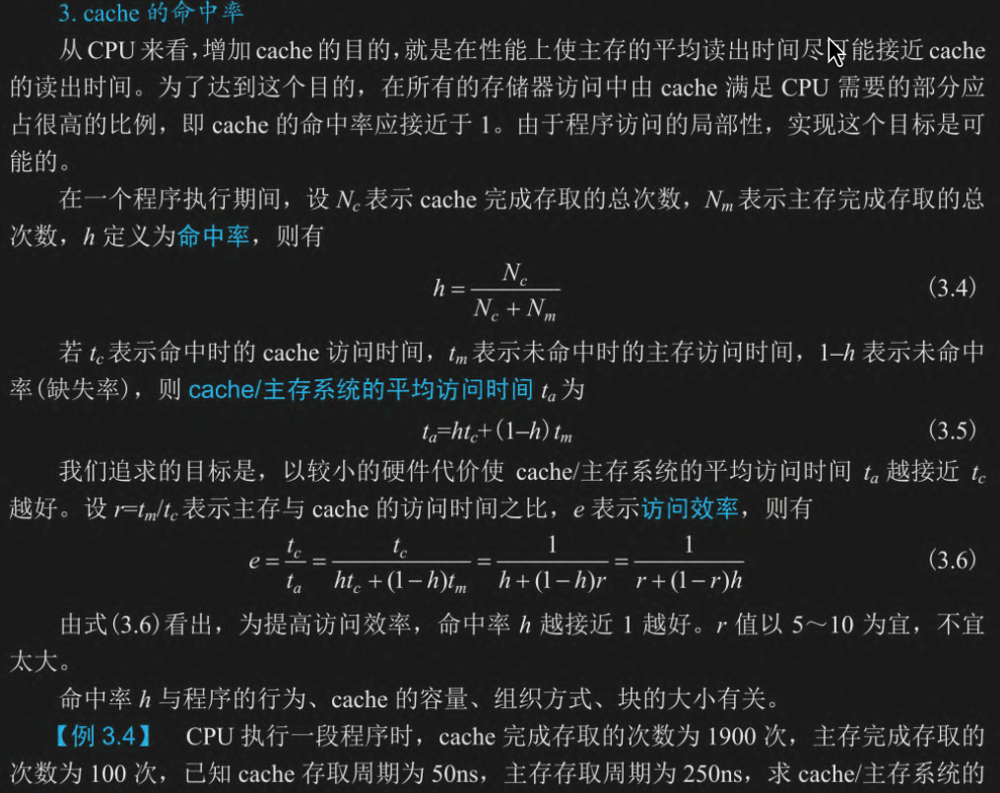
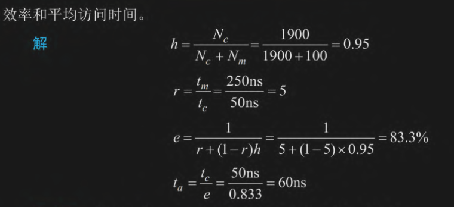
不用看上面的算法，南辕北辙了，直接返璞归真
- 命中率就是 1900/(100+1900)=95%
- 平均访问时间为 (1900*50+100*250)/(1900+100)=60ns
- 访问效率是最快比平均，50/60=83.3%
cache 地址映射
要求会计算，知道格式
CPU 发出一个主存地址找数据，Cache 系统要把这个长长的主存地址切成三段，来快速判断这个数据在不在 Cache 里。
分别是 标记 组号 块内地址/字地址，从低位到高位进行
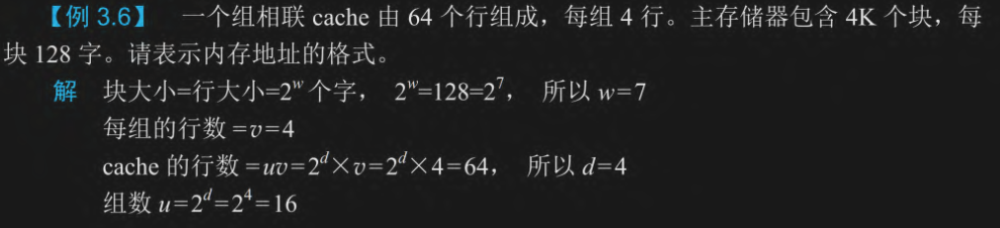
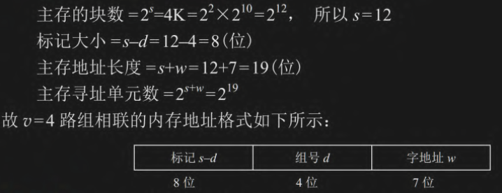
每块 128 字，也就是需要 7 位来表达它，子地址就是 7 位
cache 有 64 行，每组 4 行所以有 16 个组，组号需要 4 位来表示
主存总共有 $4K=2^{12}$ 个块， 所以除了字地址，其他的总共 12 位，标记剩下 8 位
第四章 指令系统
寻址方式
- 立即寻址：直接用后面的数字（操作数），不寻址
- 直接寻址：用后面数字的地址
- 间接寻址：用后面数字的地址的地址
- 寄存器寻址：用寄存器里面的数据
- 寄存器间接寻址：用寄存器里面地址
- 隐含寻址：和寄存器寻址有点像，但是是专用寄存器
- 偏移寻址：分为相对寻址/基址寻址/变址寻址，相对寻址是相对 PC，基址寻址和变址寻址是用寄存器里的基址，前者不好修改 后者好修改
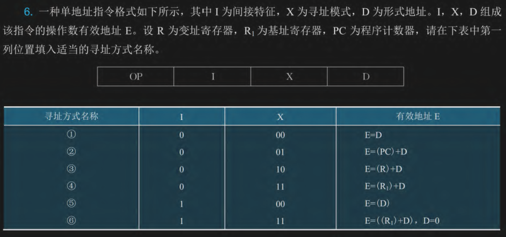
- 第一个有一次寻址，是直接寻址
- 第二个是程序计数器偏移，相对寻址
- 第三个是变址寄存器偏移，变址寻址
- 第四个是基址寄存器寻址，基址寻址
- 第五个是有一次间址，是间址寻址
- 最后一个很明显有寄存器有间址，是寄存器间址寻址
还有课后题的第十二题也是，这里不再赘述
第五章 CPU
指令周期
需要认识的缩写：
- PC (程序计数器)：存放下一条要执行的指令的地址。（快递单上的目标地址）
- IR (指令寄存器)：存放当前正在执行的指令。（拆开快递看里面要干嘛）
- ALU (算术逻辑单元)：负责加减乘除和逻辑运算。（加工厂）
- $R_0 \sim R_3$(通用寄存器)：CPU 内部存放临时数据的草稿本。
- DR (数据缓冲寄存器)：CPU 和外部总线（DBUS）交换数据的临时中转站。
- AR (地址寄存器)：通常用来暂存要访问的内存地址（图5.5中只标了虚线框，实际使用的是专用的地址总线通道）
指令周期一般分为 取指周期 间址周期 执行周期 中断周期，这里我们只考虑取取指和执行周期，取指周期每个指令都一样 是从内存拿指令到 CPU 中的 IR，然后把 PC + 1 再取下一条，执行周期是就具体的指令去干活
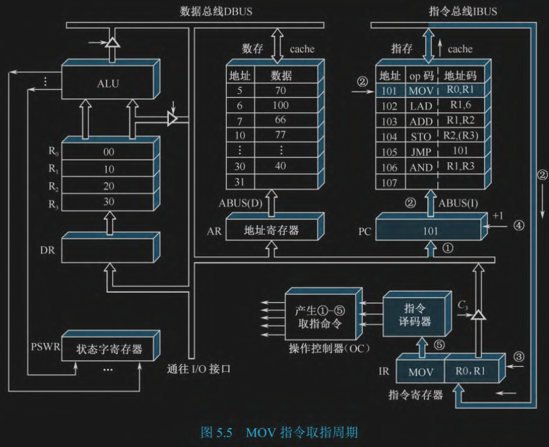
目标： 把地址为 101 的指令 MOV R0, R1 取回 CPU。
- (PC) -> ABUS：把 PC 的地址放在地址主线
- M(PC) -> IBUS：把 PC 对应的指令放在指令总线
- (IBUS) -> IR：CPU 把指令总线上的 指令放在 IR 中
- PC+1 -> PC： 程序计数器加一
- 译码
总结：取 PC 然后把 PC 相对的指令放进指令寄存器中，最后译码
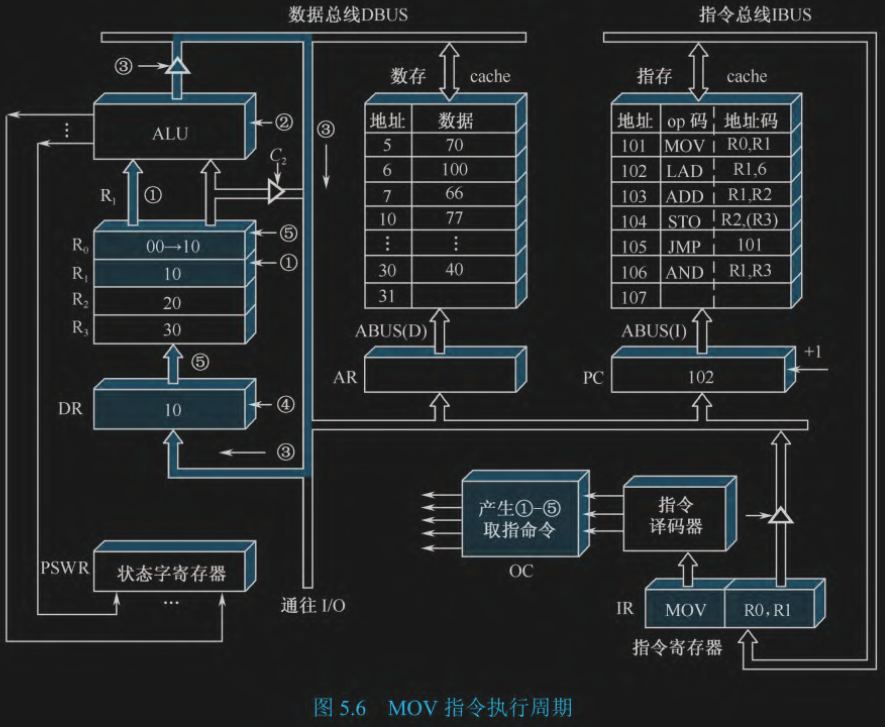
目标： 执行 MOV R0, R1，把 $R_1$ 里的数据复制到 $R_0$ 里。
- (R1) -> ALU：把 R1 里面的数据放进 ALU 里面
- 运行 ALU 里面的控制单元，只传数据而不运算
- (ALU) -> DBUS：把 ALU 的输出放在数据总线上
- (DBUS) -> DR：把数据总线上的数据放在数据寄存器里
- (DR) -> R0：把 数据寄存器 里的东东放进 R0
总结：通过 ALU 把数据转了一圈
双总线
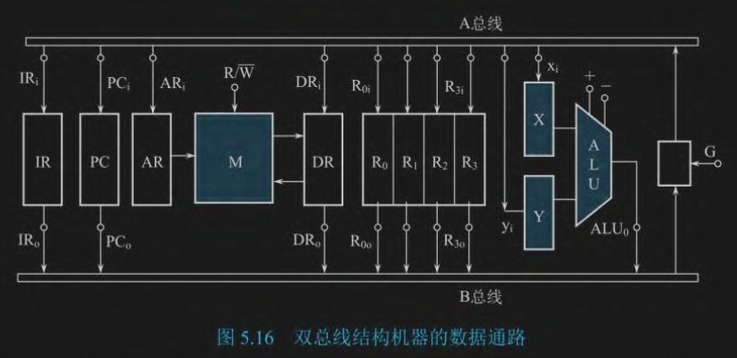
流水时空图
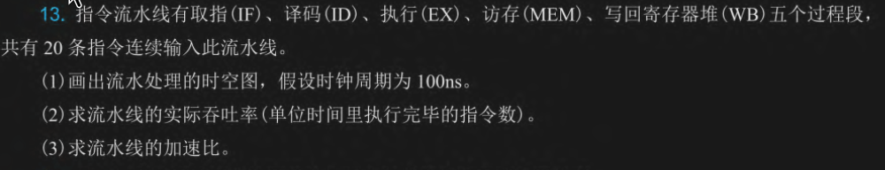
第七章 外围设备
磁盘
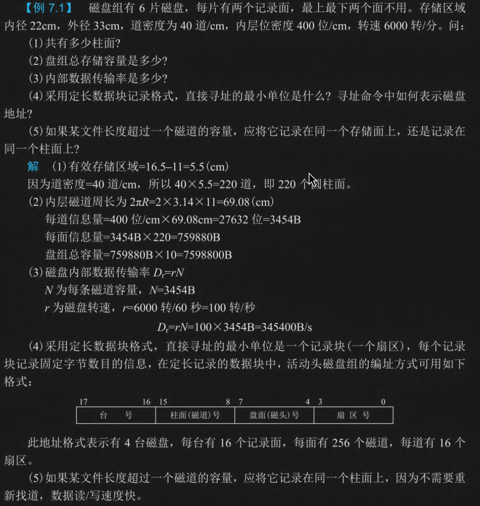
图显刷新
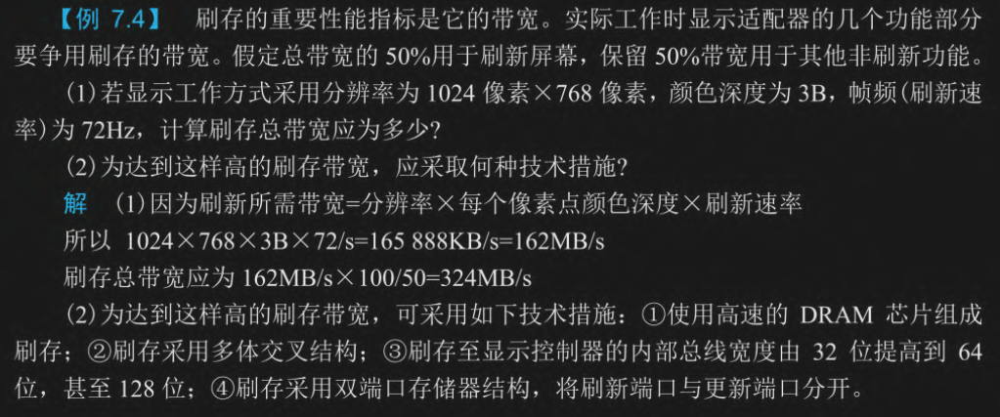
第八章 IO
多级中断
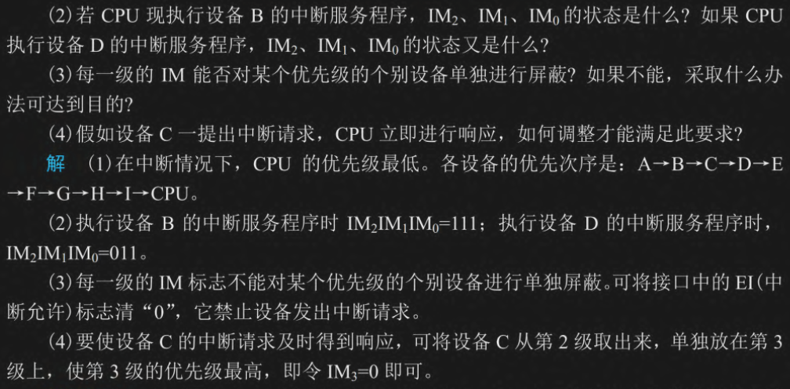
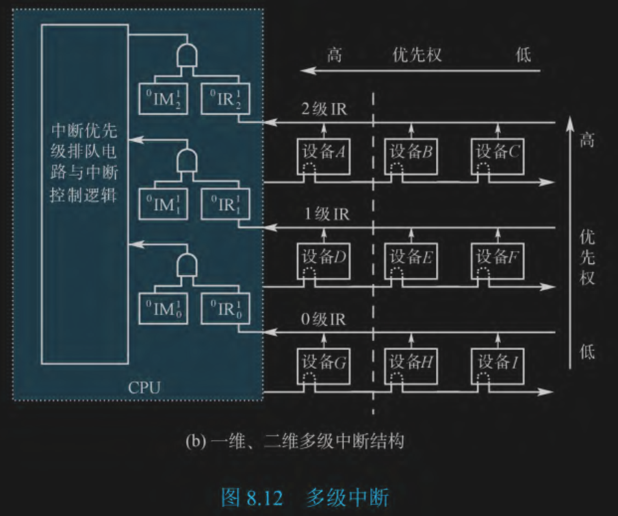
.gif)
.gif)
.gif)
.gif)
.gif)
.gif)